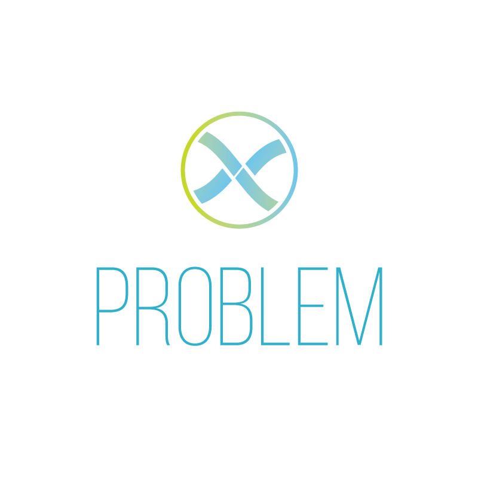

Pagmo#
{kind=link}

{kind=link}
{kind=link}
{kind=link}
{kind=link}
{kind=link}
pagmo is a C++ scientific library for massively parallel optimization. It is built around the idea of providing a unified interface to optimization algorithms and problems, and to make their deployment in massively parallel environments easy.
Efficient implementations of bio-inspired and evolutionary algorithms are sided to state-of-the-art optimization algorithms (Simplex Methods, SQP methods, interior points methods, …) and can be easily mixed (also with your newly-invented algorithms) to build a super-algorithm exploiting algorithmic cooperation via the asynchronous, generalized island model.
pagmo can be used to solve constrained, unconstrained, single objective, multiple objective, continuous and integer optimization problems, stochastic and deterministic problems, as well as to perform research on novel algorithms and paradigms and easily compare them to state-of-the-art implementations of established ones.
If you are using pagmo as part of your research, teaching, or other activities, we would be grateful if you could star the repository and/or cite our work. For citation purposes, you can use the following BibTex entry, which refers to the pagmo paper in the Journal of Open Source Software:
@article{Biscani2020,
doi = {10.21105/joss.02338},
url = {https://doi.org/10.21105/joss.02338},
year = {2020},
publisher = {The Open Journal},
volume = {5},
number = {53},
pages = {2338},
author = {Francesco Biscani and Dario Izzo},
title = {A parallel global multiobjective framework for optimization: pagmo},
journal = {Journal of Open Source Software}
}
The DOI of the latest version of the software is available at this link.
If you prefer using Python rather than C++, pagmo can be used from Python via pygmo, its Python bindings.
Contents:
Contents:
- Installation
- Quick start
- Capabilities
- C++ tutorial
- C++ API documentation
- Credits
- Changelog
- 2.19.1 (2024-08-09)
- 2.19.0 (2023-01-21)
- 2.18.0 (2021-08-03)
- 2.17.0 (2021-03-05)
- 2.16.1 (2020-12-22)
- 2.16.0 (2020-09-25)
- 2.15.0 (2020-04-02)
- 2.14.0 (2020-03-04)
- 2.13.0 (2020-01-10)
- 2.12.0 (2019-12-18)
- 2.11.4 (2019-09-29)
- 2.11.3 (2019-09-09)
- 2.11.2 (2019-08-21)
- 2.11.1 (2019-08-09)
- 2.11 (2019-08-07)
- 2.10 (2019-01-02)
- 2.9 (2018-08-31)
- 2.8 (2018-07-12)
- 2.7 (2018-04-13)
- 2.6 (2017-11-18)
- 2.5 (2017-11-12)
- 2.4 (2017-06-09)
- 2.3 (2017-05-19)
- 2.2 (2017-05-12)